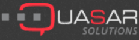
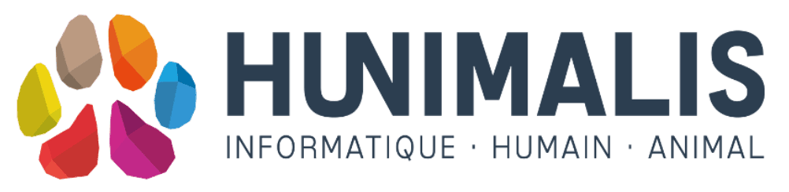

 15/01/2018 au 03/02/2018 Quasar & OBILOG groupe AWENSYS Cran-Gevrier - Haute-Savoie Stage d'immersion en entreprise offert par le Greta Lac à Annecy d’une durée de un mois. - Acteur de référence pour le Contrôle Qualité et le Pilotage des activités industrielles ISO 9001 -
Ce stage m'a permis de confirmer mon choix de reconversion, de plus, Durant ces 3 semaines de stage, j'ai été accompagné et "coaché" par un formateur en "Business intelligence". Cet accompagnement m'a donc permis d'acquérir les bases du métier ainsi que les bonnes pratiques dans ce domaine, La mission que l'on m'a confié durant ce stage était d'extraire des données via des scripts en "Python" (ces dernières étaient contenues dans une base de données). Le but étant par la suite d'analyser ces données recueillies
 11/12/17 au 15/12/2017 Hunimalis Annecy Haute-Savoie Stage d'immersion en entreprise offert par le Greta Lac Annecy d’une durée de un mois Applications pour professionnels du monde animalier.
Stage que j'ai pu effectuer dans le cadre de découverte du métier. En immersion total durant un mois, où j'ai pu observer, m'intéresser et apprendre ainsi de même pour le langage 'HTML' et 'CSS'.